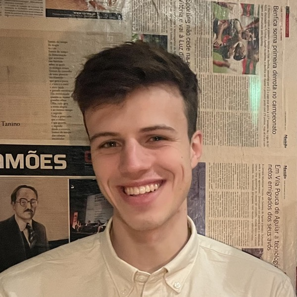

Felix O'Mahony
I'm a third year PhD candidate in computer vision at the University of Cambridge. I'm interested in building world models which respect the physical laws of the real world.
Before Cambridge, I was a computer vision R&D Engineer at Pupil Labs in Berlin. I completed an undergraduate and master's degree in engineering at the University of Oxford.
Papers
-
K2V: Generative Keyframing For Physically Plausible Video Generation
arXiv preprint, 2026
Abstract
Video diffusion models are able to generate samples with high-quality appearance and textural qualities. However, content produced by these methods is known to exhibit significant physical errors. This is because, in a classical video generation setting, all physical reasoning must take place simultaneously and exclusively within the diffusion process. We propose to resolve these issues by redistributing the task of physical reasoning onto a language model-backed keyframe generation module, which allows for explicit reasoning in language, and fine-grained control over the appearance of the video at important moments in the video. We then condition a video generation model with these keyframes, reducing the role of the diffusion model to the simpler task of interpolating between physically-correct intermediate states, rather than inferring an entire sequence with diffusion. Results demonstrate that our approach significantly outperforms existing approaches, achieving state-of-the-art performance on the Physics-IQ Verified benchmark and PhyGenBench.
-
VDAWorld: World Modelling via VLM-Directed Abstraction and Simulation
SIGGRAPH Asia 2026
Abstract
Generative video models, a leading approach to world modelling, face fundamental limitations. They often violate physical and logical rules, lack interactivity, and operate as opaque black boxes ill-suited for building structured, queryable worlds. To overcome these challenges, we propose a new paradigm focused on distilling an image caption pair into a tractable, abstract representation optimized for simulation. We introduce VDAWorld, a framework where a Vision-Language Model (VLM) acts as an intelligent agent to orchestrate this process. The VLM autonomously constructs a grounded (2D or 3D) scene representation by selecting from a suite of vision tools, and accordingly chooses a compatible physics simulator (e.g., rigid body, fluid) to act upon it. VDAWorld can then infer latent dynamics from the static scene to predict plausible future states. Our experiments show that this combination of intelligent abstraction and adaptive simulation results in a versatile world model capable of producing high quality simulations across a wide range of scenarios. We demonstrate several applications of VDAWorld across interactive control and counterfactual generation, and physical and logical reasoning, achieving state-of-the-art results on several benchmarks.
-
Learning Color Equivariant Representations
ICLR 2025
Abstract
In this paper, we introduce group convolutional neural networks (GCNNs) equivariant to color variation. GCNNs have been designed for a variety of geometric transformations from 2D and 3D rotation groups, to semi-groups such as scale. Despite the improved interpretability, accuracy and generalizability of these architectures, GCNNs have seen limited application in the context of perceptual quantities. Notably, the recent CEConv network uses a GCNN to achieve equivariance to hue transformations by convolving input images with a hue rotated RGB filter. However, this approach leads to invalid RGB values which break equivariance and degrade performance. We resolve these issues with a lifting layer that transforms the input image directly, thereby circumventing the issue of invalid RGB values and improving equivariance error by over three orders of magnitude. Moreover, we extend the notion of color equivariance to include equivariance to saturation and luminance shift. Our hue-, saturation-, luminance- and color-equivariant networks achieve strong generalization to out-of-distribution perceptual variations and improved sample efficiency over conventional architectures. We demonstrate the utility of our approach on synthetic and real world datasets where we consistently outperform competitive baselines.
-
On Segmenting Pupil Contours in Terms of Elliptical Fourier Series
WACV 2025 Workshops (GMCV)
Abstract
Accurate pupil segmentation is crucial for many video-based eye-tracking algorithms often serving as a foundational step for downstream tasks such as gaze estimation and pupillometry. While it is typically assumed that unoccluded pupil contours are perfect ellipses they often reveal significant deviations caused by corneal refraction and the inherent non-circularity of the iris's pupillary opening. To address these challenges we introduce a novel deep-learning-based segmentation method that models pupil contours using low-order Elliptical Fourier Series. While providing a flexible representation capable of capturing realistic distortions the chosen approach establishes a suitable inductive bias effectively constraining the space of possible segmentations to smooth closed and non-intersecting curves. Our method achieves segmentation accuracy comparable to a state-of-the-art technique while offering additional benefits over pixel-wise segmentation approaches including a compact representation and compatibility with temporal and spatial interpolation. Furthermore we critically evaluate the limitations of the commonly used area-based Intersection over Union (IoU) metric highlighting through theoretical modeling and experimental validation its susceptibility to biases from region size and label noise. To overcome these issues we propose to use a contour-based evaluation metric instead that robustly assesses segmentation quality while addressing these shortcomings.